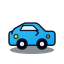
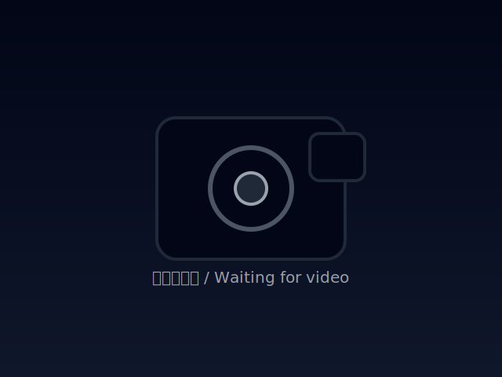

SmallCar 远程控制V1.0
WS地址：
连接
未连接
视频流地址：
加载

小车
速：
中
↖
↑
↗
←
■
→
↙
↓
↘
云台
↑
←
◎
→
↓
T
0
S
0
Y
90
° P
90
°
当前状态
ESP32-CAM 固件：
--
油门 / 转向 / 云台角度
T
0
S
0
Y
90
° P
90
°
小车运动
速度：
中
↖
Q
↑
W
↗
E
←
A
■
S
→
D
↙
Z
↓
X
↘
C
油门（前进/后退）：
0
负数：后退，正数：前进；范围 -100..100。
转向（左/右）：
0
负数：向左；正数：向右；范围 -100..100。
云台控制
↑
←
◎
→
↓
水平角 Yaw：
90
°
俯仰角 Pitch：
90
°
×
长按（手机）或右键（电脑）图片可以保存到本地
×
摄像头高级设置
画质预设：
流畅（低延迟）
平衡
清晰（高画质）
平衡：640×480，中等码率，适合大多数场景。
亮度：
0
对比度：
0
饱和度：
0
水平镜像（镜头装反时使用）
垂直翻转
自动曝光 AEC
自动增益 AGC
自动白平衡 AWB
白平衡模式：
自动
晴天
阴天
办公室
家居
曝光补偿：
0
补光灯亮度：
0
ESP32-CAM 固件升级：
本地文件升级
从路由器一键升级
打开固件仓库
可以手动选择编译生成的 .bin 文件，或直接从路由器提供的最新固件一键升级。
固件服务器（可选）：
默认使用
http://192.168.31.1:8099
。CI 会在
http://192.168.31.1:8099/firmware/esp32cam-latest.bin
提供最新固件，一般无需修改此项。
应用到摄像头